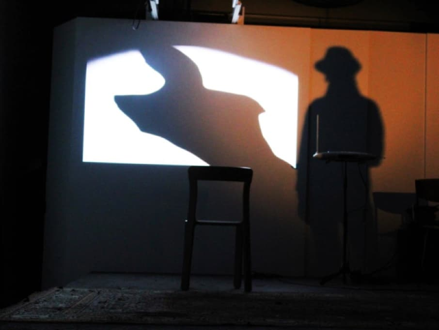

Het MAP-atelier in De Kunstfabriek
Sta je open voor kunst, voel je de goesting om je artistiek te ontplooien, maar weet je nog niet welke expressievorm bij je past? Of heb je reeds een artistieke passie en wil je die graag verder uitdiepen? Maak dan een aanvang met MAP.
MAP staat voor Maatschappelijk Artistiek Projectatelier waar je als volwassene wekelijks in De Kunstfabriek kan werken met muziek, schrijven, beeldende kunst en bewegingsexpressie. Met al deze kunstexpressies bouw je aan zelfvertrouwen en artistieke verbreding.
Uniek is het werken met verschillende kunstuitingen die mekaar (en jezelf) verrijken.
We verkennen laagdrempelig jouw expressiemogelijkheden (in wat jou eigen is, jouw ‘zijn’). Procesmatig gaan we op ontdekking naar welke expressievorm het dichtst bij jou aanleunt. Daar omheen bouwen we de andere kunstuitingen.
In een open klimaat vertrekken we dus vanuit jouw eigen leefwereld, vanuit jouw kunnen en kennen. Wekelijks leef je je uit in de verschillende kunstgenres die per sessie samen worden aangereikt. Heb je geen vooropleiding, wees welkom.
Heb je wél een vooropleiding, wees ook welkom. De belangrijkste ingrediënten zijn goesting en durf.
Het MAP-atelier wordt geleid door Daeninck Scheerlinck, verbonden aan De Kunstfabriek Duffel, het DKO en de Hogeschool Gent. Hij heeft jarenlange ervaring als kunstenaar, kunstleraar en begeleider in het kwartiermaken in de geestesgezondheid.

PRAKTISCH
De Kunstfabriek organiseert het MAP-atelier als een 10-lessenreeks op volgende donderdagen: 18 en 25 jaunari - 1, 8, 22 en 29 februari - 7, 14, 21 en 28 maart.
Wil je meer te weten komen, neem dan zeker contact:
Gemeentestraat 21, 2570 Duffel tel. 015 30 72 56
joke.hendrickx@duffel.be"> Daeninck Scheerlinck, projectleider MAP
Telefoon 0494 808 218
daeninck.s@skynet.be">
Prijs van de lessenreeks bedraagt 65 euro voor Duffelaars en 102 euro voor niet-Duffelaars.
Het verminderd tarief ‘Vrije tijd voor iedereen’ bedraagt 13 euro.
Het verminderd tarief wordt toegepast na voorlegging attest verhoogde tegemoetkoming geneeskundige zorgen, na overleg met OCMW voor inwoners van Duffel die in begeleiding zijn bij het OCMW of bij een erkend schuldbemiddelaar, aan wie verblijft in een Duffelse zorginstelling of aan Duffelaars die in een zorginstelling verblijven.
Inschrijven via het Vrijetijdsloket Duffel 015/ 30 72 53 of via www.duffel.be/webshop